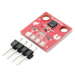
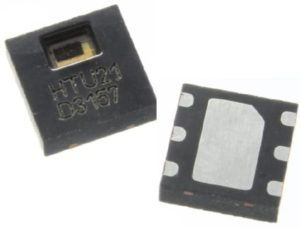
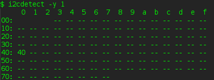
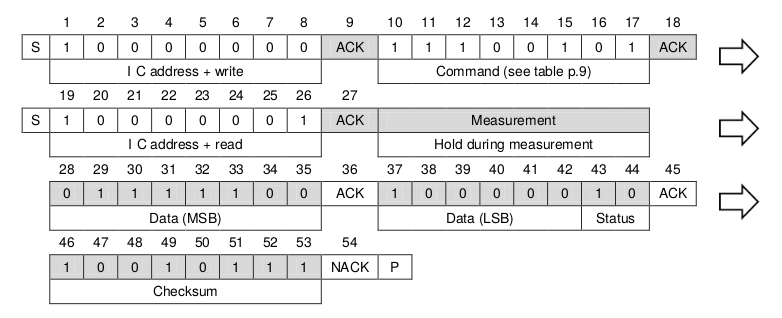

Previously in my projects, I’m always used well-known DHT22 (AM2302) temperature/humidity sensors. But I found that these sensors are not very stable and subject to hung. In my case, this device is worked for about two weeks and then stops responding until the power is rebooted. This is absolutely unacceptable on some distant and autonomous devices. After some googling, I found that I’m not alone, and some peoples also experienced such a problem.
I’ve decided to replace these sensors with something more reliable and more accurate. My choice fell on HTU21D from the Measurement Specialties. HTU21D is a reliable and precise sensor, much newer than DHT, and uses a standard i2c bus instead of some 1-wire protocol. I want to describe the connection of this device to the Raspberry PI in detail.
In one of my previous articles, I’ve already described interfacing with I2C/SMBus devices. In the current case, everything is much simpler, but some concepts are the same.
Let’s check out the device datasheet first.
The document says that we can send these commands to trigger some actions and then get the result:
| Command | Code | Comment |
|---|---|---|
| Trigger Temperature Measurement | 0xE3 | Hold master |
| Trigger Humidity Measurement | 0xE5 | Hold master |
| Trigger Temperature Measurement | 0xF3 | No Hold master |
| Trigger Humidity Measurement | 0xF5 | No Hold master |
| Write user register | 0xE6 | |
| Read user register | 0xE7 | |
| Soft Reset | 0xFE |
Since the driver covers all low-level I2C level, we don’t worry about clocks and start/stop sequences. Please read the MLX90614 article if you want to know details about this communication protocol.
In the first case, the SCK line is blocked (controlled by the HTU21D sensor) during the measurement process, while in the second case, the SCK line remains open for other communication while the sensor is processing the measurement.
The first variant is faster – you can get a result at once as measurements are made.
In the case of the second variant – you have to poll the device with some timeout, waiting for the status “done”. Of course, a persistent request is not a good idea because you can flood the i2c line.
I have multiple devices on the I2C bus in my device, so I chose the second variant with a 50 ms polling.
Connecting to the Raspberry Pi.

HUT21D is supplied in the small DFN package. This is good but may cause trouble with soldering.
Fortunately, It’s easy to buy a breakout board with an already mounted HTU21D device and all required extra components.
The connection of this board is also straightforward.
{kind=link}
The sensor is ready to use.
Programming
There are many options to work with this sensor, using different libraries and programming languages. But in the current example, we will use a pure Linux i2c interface in C. This is the clearest and faster way to use our device.
First of all, we need to load i2c_bcm2708 kernel module. We can do it with a modprobe command: sudo modprobe i2c_bcm2708
For automatically loading this module on every boot, add the module name to the end of the /etc/modules file.
After successful module loading you can find two new devices: /dev/i2c-0 and /dev/i2c-1. There are two separate i2c buses, and in the case of the first generation of the Raspberry – only i2c-1 is available on the GPIO header (GPIO2 and GPIO3). i2c-0 is available for manual soldering. In later Raspberry’s models, both buses are available on the GPIO header.
To check that the HTU21D device is properly connected and worked, run this command: i2cdetect –y 1 (1 means /dev/i2c-1 device). This utility is available in the i2c-tools package.
HTU21 address is 0x40 and cannot be changed. And if everything is OK and the HTU device is lonely on the bus – you can see such output:

Note: if you want to connect two sensor simultaneously the only way to do this is connect them to separate i2c buses which is available on the Raspberry board.
Now we ready to write code.
Here is an initialization of the I2C interface for HTU21D, nothing extra:
#include <sys/ioctl.h>
#include <sys/types.h>
#include <sys/stat.h>
#include <fcntl.h>
#include <stdio.h>
#include <errno.h>
#include <string.h>
#include <linux/i2c-dev.h>
int fdev = open("/dev/i2c-1", O_RDWR); // open i2c bus
if (fdev < 0) {
fprintf(stderr, "Failed to open I2C interface %s Error: %s\n", dev_path, strerror(errno));
return -1;
}
unsigned char i2c_addr = 0x40;
// set slave device address 0x40
if (ioctl(fdev, I2C_SLAVE, i2c_addr) < 0) {
fprintf(stderr, "Failed to select I2C slave device! Error: %s\n", strerror(errno));
return -1;
}
We got a regular file descriptor in dev, and we can send requests and read responses.
The previous article communication protocol is complex and used SMBus transactions with structures and ioctl() calls.
Now, all we need is just a write() and read().
According to the datasheet, to trigger the temperature measurements (in blocking mode), we need to send 0xE3, so let’s do this.
uint8_t buf[1]; buf[0] = 0xE3; write(fdev, buf, 1);
That’s all. Now we ready to get device response with read().
Because we used 0xE3 command, we can just read on the descriptor, and this call will be blocked while measurements are in progress.
But how many bytes we should read, and what we are actually reading?
Again, let’s check out the device datasheet, page 11.
Measured data are transferred in two byte packages, i.e. in frames of 8-bit length where the most significant bit (MSB) is transferred first (left aligned). Each byte is followed by an acknowledge bit.
Since the maximum resolution of the measurement is 14 bits, the two last least significant bits (LSBs, bits 43 and 44) are used for transmitting status information. Bit 1 of the two LSBs indicates the measurement type (‘0’: temperature, ‘1’: humidity). Bit 0 is currently not assigned.

Sensor data is split into three 8-bit parts, so we need to read three bytes: data1, data2, and checksum.
// device response, 14-bit ADC value:
// first 8 bit part ACK second 8 bit part CRC
// [0 1 2 3 4 5 6 7] [8] [9 10 11 12 13 14 15 16] [17 18 19 20 21 22 23 24]
// bit 15 - measurement type (‘0’: temperature, ‘1’: humidity)
// bit 16 - currently not assigned
uint8_t buf[3] = { 0 };
read(fdev, buf, 3);
We can combine the first and second bytes into one 16 bit value, skipping two last least significant bits.
uint16_t sensor_data = (buf [0] << 8 | buf [1]) & 0xFFFC;
What next? Using this value, we can calculate actual temperature or humidity using some formulas (page 15 of the device datasheet).
// temperature
double sensor_tmp = sensor_data / 65536.0;
double result = -46.85 + (175.72 * sensor_tmp);
printf("Temperature: %.2f C\n", result);
// humidity
result = -6.0 + (125.0 * sensor_tmp);
printf("Humidity: %.2f %%\n", result);
Little note about the checksum.
In some simple applications, you can skip verification of the checksum and use data as is. But it would be best if you always remembered that sometimes you could get an error. This error may be caused by some malfunction with a sensor or some Interference on the i2c line.
So it better to use some simple algorithm to calculate and verify crc8. You can found a lot of examples and ready-to-use functions.
In my “production” application below, you can find such verification.
No hold master mode
This mode is preferred when you have multiple devices on your bus, so blocking this bus with one device may be bad.
Temperature and humidity measurement operations can be triggered with 0xF3 and 0xF5 commands, and you can’t just call read() and wait. This call will return immediately with invalid data in the buffer.
Correct behavior here is polling with some timeout. Typically this timeout is 50 ms.
So you need to do read() every 50 ms and check how many actually bytes were read.
If this count is less than 3 – try again after the timeout.
Some moderate values can limit retry count, but typically one 50 ms timeout is enough.
uint8_t buf[3] = { 0 };
int counter = 0;
while (1) {
usleep(50000); // 50 ms
counter++;
if (read(fdev, buf, 3) != 3) {
if (counter >= 5) {
break;
}
continue;
}
break;
}
If you are interested, which is the difference in reading time between the two modes – it is quite noticeable but not critical.
No hold master.
$ time ./read_htu21d temp=18.99 humidity=33.06 real 0m0.130s user 0m0.000s sys 0m0.000s
Hold master.
$ time ./read_htu21d -l temp=19.00 humidity=33.05 real 0m0.087s user 0m0.000s sys 0m0.010s
Of course, it might be critical for some hard real-time applications.
Soft reset.
It’s recommended to perform the software reset of the sensors before any measurements.
A soft reset can be done by sending 0xFE command. After this, you should wait at least 15 ms. This time is required for the correct and full startup of the device.
Full source code of the HTU21D utility you can find on my GitHub here.
Compilation and usage are pretty simple and described in a README.
P.S.
There is another variant of this sensor – SHT21 from the Sensirion.
This sensor has the same pinout as HTU21D and uses the same protocol, even the same I2C address. So this code can be used with both types of sensors without any modifications.
Thanks for reading!
1 thought on “Connecting HTU21D temperature/humidity sensor to the Raspberry PI using simple C i2c interface”